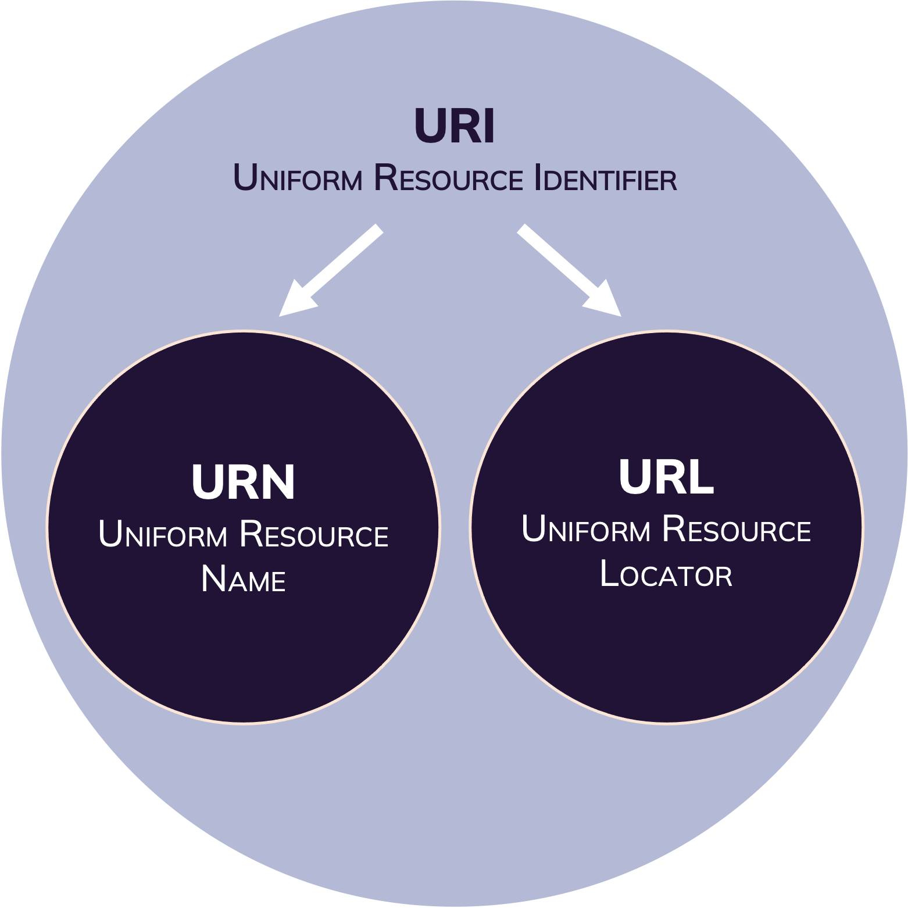

(Web) Location and Identifiers
Last updated on 2023-11-16 | Edit this page
Overview
Questions
- What are PIDs?
- What are the differences between URL, URI and PID?
- Which PIDs are connected to the research context?
- How are PIDs used in metadata records?
Objectives
- Explain basic concept of client-server communication.
- Explain differences between URL, URI and PID(s).
- Name examples of PIDs relevant for the research context.
- Familiarize with usage of URLs and PIDs in metadata records.
The Web of Today
The Web today is build for human understanding and has taken over a large part of our personal and professional lives. As scientists the World Wide Web has become an essential tool for us to conduct research.
The World Wide Web is a hypermedia system. It contains:
- Resources: A web resource is any entity (digital, physical or abstract), that is represented on the Web.
- Links: (Web identifiers) between these resources.
Web Identifiers

The Uniform Resource Identifier (URI) is a string of characters used to uniquely identify and locate a resource, (most commonly on the Web) and enable interaction with it via common protocols such as HTTP.
A Uniform Resource Name (URN) is a type of URI. It is a standard and unique identifier for digital resources on the Internet. To link to the resource from the URN, a resolver service is required.
The Uniform Resource Locator (URL) is a string of characters used to direct the client to requested resource by using the address of the resource location via communication protocols such as HTTP.
How links rot
The URL specifies the exact location of a retrievable resource on the web (host & path) as well as the communication protocol (e.g. HTTP) necessary for the local browser to address the host server. If you open a link on the web operated under the HTTP protocol, the browser sends a GET request to the host server, specifying the path to the requested resource. The host server then follows this path and responds with the resource information, if retrievable.
A resource might not be retrievable by the host server, if:
- the location was misspelled.
- the file path on the host server changed.
- the resource was deleted.
- the resource was migrated to a different server.
Each of these events will result in the 404 error response. To avoid these broken or rotten links, assigning a Persistent Identifier (PID) to the resource resolves the issue.
Persistent Identifier
A Persistent Identifier (PID) is a long-lasting reference to digital objects such as websites, articles, datasets, persons or organizations. PIDs are globally unique and persistent over time. Assigning a PID to a digital resource ensures its permanent indentifiability, accessibility, and dereferenciability.1
PID Services
A PID service operates as a persistent look-up service that redirects GET requests for digital resources to the latest URL of this resource.
The host of the digital resource is responsible for updating the resource’s location wiith the PID service after the location changed.
Frequently used PIDs in the scientific context are: - Digital Object Identifier (DOI) - Open Researcher and Contributor ID (ORCID) - Research Organization Registry (ROR)
Web Locations and (Scientific) Metadata
Assigning your Web publications (journal articles, datasets, code, etc.) with a PID holds more advantages than persistent retrievability of the resource. Many PID providers ask you to provide metadata for the published resource and store the metadata record alongside the resource. This metadata in return is accessible by machines via the PID.
PIDs can be used in metadata records as an identifier for an associated resource (e.g. a dataset, a person). In case of the researcher’s ORCiD ID, the ORCiD record stores all the metadata about a person that this person has provided and can be retrieved by the ORCiD API. In the metadata record, that is associated with this researcher, the ORCiD can be specified in the description.
JSON
{
"fileName": "exampleData.csv",
"date": "2022-02-28",
"type": "dataset",
"creator": {
"creatorName": "Bruce Wayne",
"ORCID": "https://orcid.org/0000-0002-1201-3114"
}
}The metadata stored in the ORCID record would resolve to:
JSON
{
"given-names": "Bruce",
"family-name": "Wayne",
"credit-name": "Bruce Wayne",
"other-names": "Batman",
"researcher-urls": [{
"type": "researcher-url",
"url": "https://www.dc.com/characters/batman",
"url-name": "Justice League"
},
{
"type": "researcher-url",
"url": "https://twitter.com/Batman",
"url-name": "Twitter"
}
],
"email": [
"b.wayne@ivnm-gotham.com",
"batman@justic-league.org"
],
"address": {
"country": "USA",
"state": "New Jersey",
"city": "Gotham City",
"zip-code": "08302",
"street": "Wayne Rd 1"
},
"employment": [{
"department-name": "Institute for Vigilance and Nightly Motion",
"start-date": {
"year": 1955,
"month": 8,
"day": 15
},
"organization": {
"name": "Justice League",
"address": {
"city": "Gotham City",
"region": "New Jersey",
"country": "USA",
"disambiguated-organization-identifier": "https://ror.org/05jl9bm63"
}
}
},
{
"department-name": "Board of leaders",
"start-date": {
"year": 1939,
"month": 3,
"day": 30
},
"organization": {
"name": "Wayne Enterprises",
"address": {
"city": "Gotham City",
"region": "New Jersey",
"country": "USA",
"disambiguated-organization-identifier": "https://ror.org/04we5bw33"
}
}
},
{
"department-name": "Executive Office",
"start-date": {
"year": 1945,
"month": 4,
"day": 1
},
"organization": {
"name": "Wayne Foundation",
"address": {
"city": "Gotham City",
"region": "New Jersey",
"country": "USA",
"disambiguated-organization-identifier": "https://ror.org/02eo4wf52"
}
}
}
]
}Machine-Actionability and Interoperability
As discussed previously, most resources on the Web are optimized for the human audience. In order to make the information accessible for machines, elaborate computations would be necessary to process and contextualize the data. By attaching PID (metadata) Records to data objects that are located by PIDs, the machine-actionability and interoperability of the resource is significantly enhanced. PID Records are stored with the PID resolver service and conform to a well-defined PID Record Schema (or Kernel Information Profile).23
Outlook: The Semantic Web
PIDs can be used as identifiers for (meta)data terms
(or entities) and relationships in
schemas, vocabularies, and ontologies. With this technology, machines
are provided with a blueprint of concepts, categories and relationships
associated with data entries. In other words, meaning and references are
added to the data.
The Semantic Web was proposed
by Tim Berners-Lee and his colleagues in 2001.4 The World Wide Web Consortium (W3C) envisions
in the Semantic Web a “Web of linked Data” and has issued a set of
standards, which “enables people to create data stores […], build
vocabularies, and write rules for handling data.5
Keypoints
- URLs can unambiguously identify a Web resource.
- DOI, ORCiD, and ROR are relevant PIDs in the scientific context.
- PIDs can be used to persistently identify and a resource on the Web.
- Some PIDs come with associated metadata records which are specified by Kernel Information Profiles (PID Record Schemas).
- Identifying entities (terms) of vocabularies, schemas, and ontologies is essential for Semantic Web technologies.
Kunze, J. (2018, August 24). Ten persistent myths about persistent identifiers. https://escholarship.org/uc/item/73m910w8↩︎
Weigel, T., Plale, B., Parsons, M., Zhou, G., Luo, Y., Schwardmann, U., Quick, R., Hellström, M., & Kurakawa, K. (2018). RDA Recommendation on PID Kernel Information. Research Data Alliance. https://doi.org/10.15497/RDA00031↩︎
Curdt, C., Günther, G., Jejkal, T., Koch, C., Krebs, F., Pfeil, A., Pirogov, A., Schweikert, J., Videgain Barranco, P., Weinelt, M., HMC Cross-cutting Topic Working Group “From Development to Deployment” (2022). Helmholtz Kernel Infomation Profile. Helmholtz Metadata Collaboration. DOI 10.3289/HMC_publ_03.↩︎
Berners-Lee, T., Hendler, J., Lassila, O. (2001). The Semantic Web. Scientific American↩︎
World Wide Web Consortium. (n.d.) Semantic Web Standards. https://www.w3.org/2001/sw/wiki/Main_Page↩︎